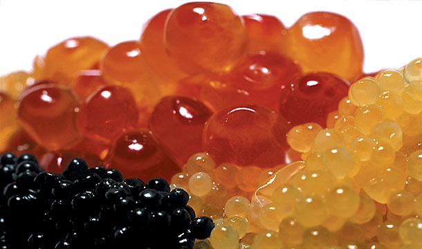

Из истории икры в кулинарии

Распространённое в других странах слово caviar («чёрная икра») – не
французского, а южнорусского происхождения: несколько веков назад
«кавиаром» именовали в Астрахани «блюдо из осетрового нутра».
Черную икру ели и ценили с античных времен, но не всегда и не
везде. Во Франции и Германии, где три-четыре века назад еще во множестве
водились осетровые, никакого пиетета к "рыбьим яйцам" не испытывали.
Хотя до тех пор, пока люди сточными водами не отравили реки и водоемы, и
рыбы в них, и соответственно, икры в Европе и в России было
неисчислимое множество. Тяжкий токсический удар по рекам, озерам и
живности в них был нанесен в Европе в XVIII-XIX веках, а в России в XX
веке.
На Руси почти до середины XIX века черную, красную и прочую
рыбью икру считали едой для самых бедных крестьян, а ценили только рыбье
мясо.
Даже крестьяне побогаче икру не ели. Помните в фильме "Иван
Васильевич меняет профессию" знаменитую сцену с огромными лоханками
рыбьей и маленькой порцией "заморской" баклажанной икры? На самом деле, в
те времена тот, кто посмел бы подать на пиршественный царский стол
рыбью икру, не сносил бы головы за такое оскорбление, хотя в своем
ежедневном питании Иван Грозный был прост до аскетизма.
Небольшую популярность в России черная икра начала приобретать
лишь при Петре I.
Но когда российский посол преподнес подарок Петра I — черную икру —
молодому Людовику XV, монарх с омерзением выплюнул ее прямо на ковер.
Лишь в середине XIX века, в т.ч. стараниями тогдашних
медиков-диетологов, икра начала входить в моду сразу во всех слоях
общества, и в российские города потянулись длинные обозы с бочками ранее
бросовой соленой черной и красной икры.
Статус ресторанного блюда икра получила в 1920-х годах во
Франции, когда в Париже открылся Дом икры Petrossian Paris. Его
владельцы – братья Петросян, армяне-эмигранты родом из Баку, -
рассчитали всё верно: французская богема в то время переживала пик
увлечения всем русским – Мережковским и Шаляпиным, Рахманиновым и
Стравинским, Дягилевым и Нижинским, – и русская икра оказалась
востребованной.
Именно с тех пор чёрная икра считается отличной закуской к
шампанскому. Здесь следует помнить, что к ней подходит исключительно
настоящий брют из провинции Шампань, а вот сладкое итальянское спуманте
лишь перебивает вкус икры.
Черная икра хороша сама по себе, и есть ее нужно обязательно
серебряными ложечками – любой другой металл придает ей специфический
привкус.
Подавать икру желательно в специальных икорницах (кстати, это
русское изобретение), установленных на блюде со льдом. При этом
какие-нибудь хлебобулочные изделия (лучше в виде тонких тостов) и
сливочное масло тоже могут присутствовать на столе.